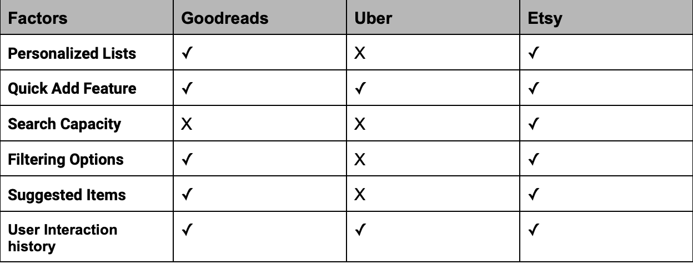

Project Overview
As part of my design research, I conducted a competitive analysis to understand how various organizations design their favoriting functions in web interfaces. This analysis provided insights and guidance for designing effective user experiences.
I selected three different websites with a favoriting function and examined how they organize information relevant to users and utilize aggregators, such as shopping carts and favorites lists.
For each website, I observed how they sort and filter information in their favoriting functions and analyzed the impact of these decisions on the user experience. I documented my findings in a Competitive Comparison Chart, evaluating each website against several key factors related to the favoriting function.
Along with the Competitive Comparison Chart, I wrote a summary outlining my discoveries, highlighting the most and least successful factors of each website, and providing justification based on design principles and practical observations.
Based on these reflections, I brainstormed and planned my own list-based interface, identifying the features and designs that worked well and those that didn't. This planning stage included sketching and mockups to flesh out my ideas.
Competitive Comparison Chart
Summary
In comparing the favoriting functions on Goodreads, Uber, and Etsy, I found each platform has unique strengths. Goodreads and Etsy both support custom lists, which is great for organizing favorites in a way that makes sense for individual users. Etsy’s ability to search within favorites is a standout feature that neither Goodreads nor Uber offers, making it easier to find specific items quickly.
Goodreads and Etsy also excel in providing advanced filtering options, which significantly enhances the user experience by allowing users to sort their favorites by various criteria. Uber’s favoriting function is simpler, focusing on an instant add feature that’s also present on Goodreads and Etsy, ensuring quick and easy addition of items to favorites.
One of the most user-centric features on Goodreads and Etsy is the item suggestion functionality, which recommends new favorites based on past activity. This personalized touch helps users discover new items they might love. All three platforms track user interaction history, but the way this data is utilized varies, with Uber taking a more basic approach.
Features for Plant Adoption App
Key Features:
- Custom Plant Lists: Allow users to create lists of plants they’re interested in or have adopted.
- Instant Add: Enable users to quickly add plants to their favorites with a single click.
- Search Within Favorites: Implement a search bar to find specific plants within the favorites list.
- Advanced Filtering: Provide filtering options (e.g., type of plant, light requirements, care level) to help users narrow down their choices.
- Plant Suggestions: Recommend new plants based on users’ favoriting patterns and past interactions.
- User Interaction History: Track and utilize user interactions to personalize the experience and improve suggestions.
Vercel Deployment
The app is currently deployed on Vercel. You can access it at the following link: https://dev-cs1300.vercel.app/
Please note that the React app is currently experiencing issues, and the deployment is not functioning as expected. However, all the steps for deployment were followed correctly.